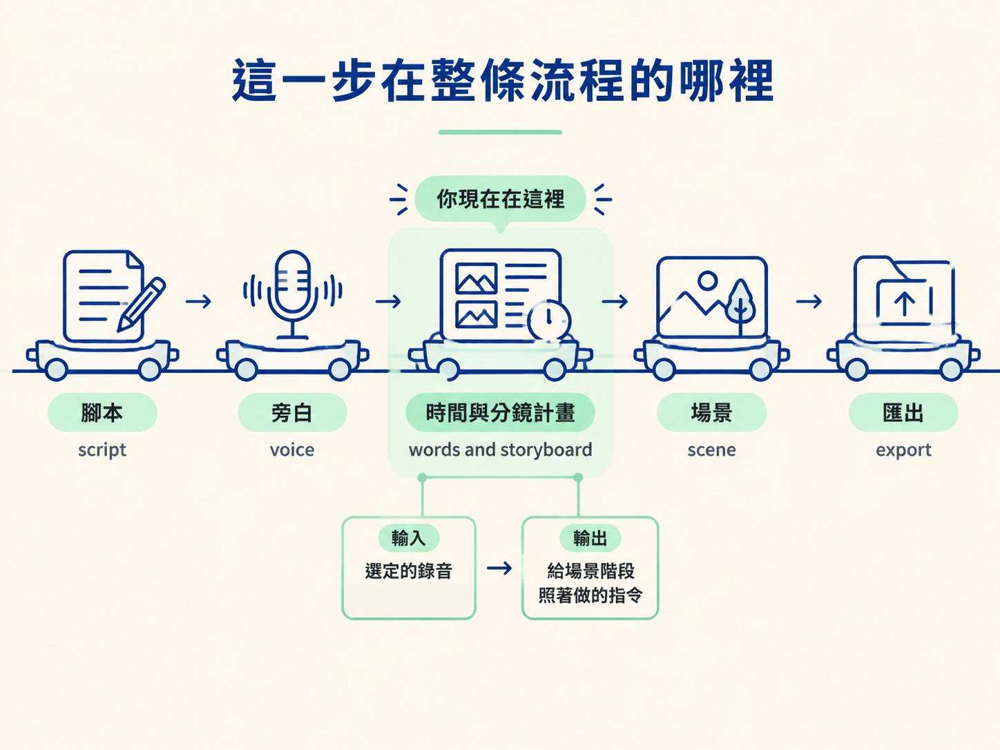

上一課你已經挑好一段可以使用的旁白 take，也親耳確認過內容。可是影片不能只靠聲音往前走，觀眾的眼睛也需要知道現在該看哪裡。
如果畫面從頭到尾停在同一張圖上，再好的旁白也可能讓人分心；如果畫面只是隨意切換，觀眾又會搞不清楚眼前的內容和旁白有什麼關係。現在要解決的問題很具體：哪一句話、在什麼時候、該看到什麼？
這一階段會把旁白整理成一份「畫面時間表」。例如旁白提到 Sam 和 Friday 時，計畫就要清楚寫出那個時間點該出現什麼畫面、觀眾要注意什麼。你不需要在這裡親手畫出場景，但要能讀懂並抽查這份計畫，因為後面的 AI 會照著它生成畫面。
整條流程可以想成蓋房子：先準備腳本，再錄好旁白，接著把聲音整理成「什麼時候說了什麼、那時候要看到什麼」的藍圖，最後才讓 AI 依照藍圖蓋出場景並匯出。
流程的順序是：腳本（script）→ 旁白（voice）→ 時間與分鏡計畫（words and storyboard）→ 場景（scene）→ 匯出。

你現在正式走到「words and storyboard」這一格。輸入是上一階段選定的錄音，輸出是一份讓後面的場景階段照著做的指令。這一步整理得清楚，下一步就能照表執行；如果這一步含糊，後面的畫面也會跟著失去方向。
完成後，專案裡會多出兩個互相搭配的檔案。它們的用途不同：一份記錄錄音裡實際發生的事，另一份記錄你希望觀眾看到的內容。
| 產出 | 內容 | 它回答的問題 |
|---|---|---|
| 逐字稿＋時間檔 | 一份人看得懂的逐字稿，以及標示每個字落在第幾秒的時間檔 | 「旁白實際說了什麼？是在第幾秒說的？」 |
| 分鏡計畫（cues） | 一份文字檔，把每一句話對應到一個畫面工作 | 「講到這句時，觀眾該看到什麼、該注意什麼？」 |
可以把它們想成一組搭配好的地圖。逐字稿和時間檔是錄音留下的事實；cues 分鏡計畫則是根據這些事實做出的決定。到了場景階段，AI 會把兩份內容合在一起，將旁白中的每個片段轉成具體畫面。
分鏡計畫不是藏在工具裡、只能按下播放才看得懂的黑箱動畫，而是一份普通文字檔。這正是它容易檢查的原因。
首先，它讀得懂。你可以像讀腳本一樣，從頭到尾查看每一段安排。其次，它容易修改。想調整一個 beat，或刪掉一段沒有幫助的畫面，只要改幾行文字，不必先重做整個場景。
更重要的是，它把兩種工作分開了：AI 負責把每個 phrase 變成具體畫面，你負責判斷這些畫面有沒有真的在回答旁白。這就像先看施工藍圖再蓋房子；如果藍圖上的房間位置不對，越早發現，修正的代價越小。
這一階段不需要你把每個時間碼重新輸入一遍。AI 會先根據錄音產生逐字稿與時間資訊，你要做的是抽查一小段，確認檔案內容真的符合錄音。
抽查時，可以一邊播放旁白，一邊閱讀逐字稿與 cues 計畫，留意兩件事：
例如，聽到旁白提到 Sam 和 Friday 時，就看看計畫是否安排了能幫助觀眾理解這段內容的畫面，而不是放入一個和旁白無關的場景。這就是本課的品質標準：邊聽旁白、邊讀計畫，確認畫面有沒有回答正在聽到的那句話。
這個階段把選定的旁白整理成兩份東西：一份逐字稿＋時間檔，記錄錄音實際說了什麼；一份 cues 分鏡計畫，決定每句話要配什麼畫面。因為分鏡計畫是一份可讀、可修改的文字檔，所以你能在場景生成前逐句檢查。你的工作不是重打所有時間碼，而是抽查文字與時間，並確認每個畫面都在回應正在聽到的內容。
下一節就從最前面的「事實」開始：請 AI 對錄音執行一次轉錄，先產生逐字稿與時間資訊，再檢查文字和時間這兩個最容易出錯的地方。